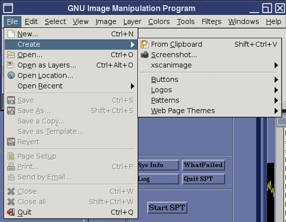
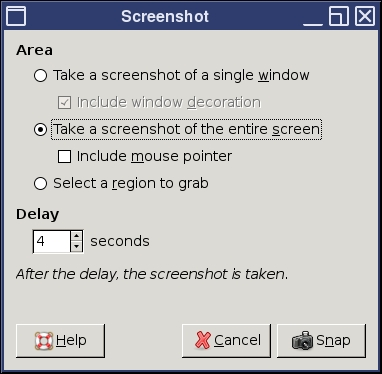
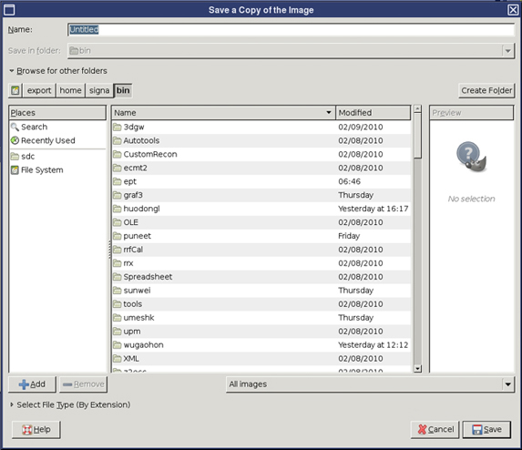

Operating Documentation
Direction 5500113, Rev# 3
Module Version 3.0, Version Date 7/1/10
Operating Documentation |
To start GIMP, open a C-shell, type gimp at the prompt and press <Enter>. If GIMP is not configured on the Host PC, follow the screen prompts to configure.
To capture a screen shot, move the GIMP windows if they are blocking any portion of the proposed shot.
(For Pre DV Apps) (For DV Apps) From The GIMP File menu, select Acquireor create, then Screen Shot. (Both screens are shown below.)
Illustration 4: GIMP File Menu for Pre DV Apps

Illustration 5: GIMP File Menu for DV Apps

When the Screen Shot dialog box displays, select desired preference and click [OK].
Illustration 6: GIMP Screen Shot Window for Pre DV Apps

Illustration 7: GIMP Screenshot Window for DV Apps

Click on the screen or window to capture. The screen shot displays in a new GIMP window.
To save the file, select Save As from the File menu.
In the Save Image window, name the file, select a file extension, then the directory where the file should be saved.
Illustration 8: Saving an Image for Pre DV Apps

Illustration 9: Saving an Image for DV Apps
